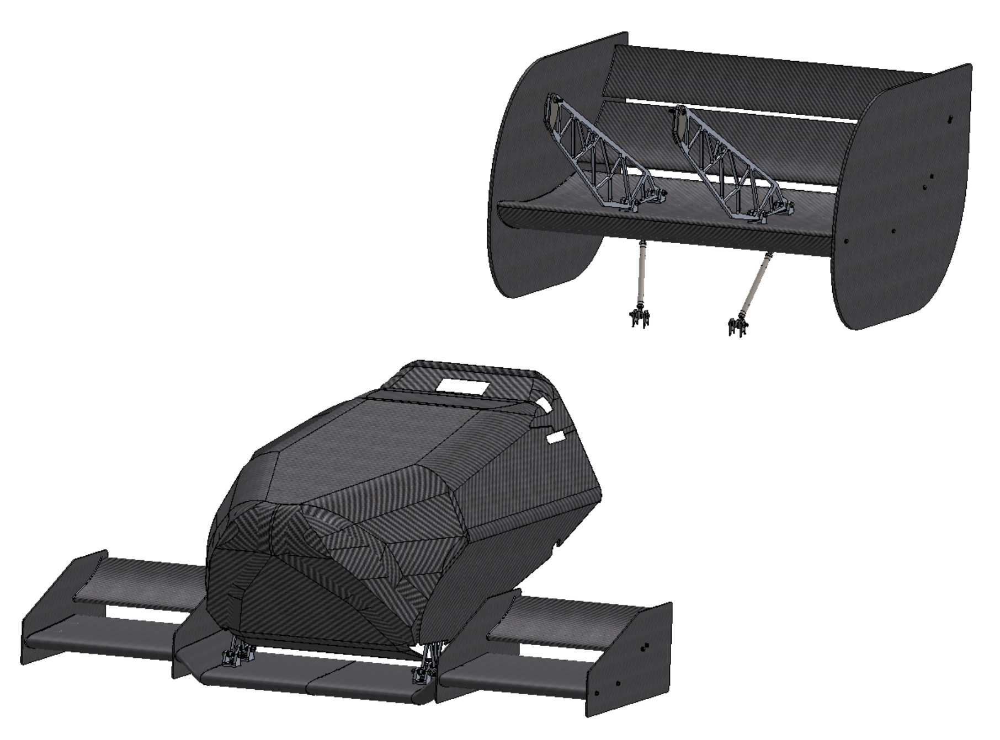
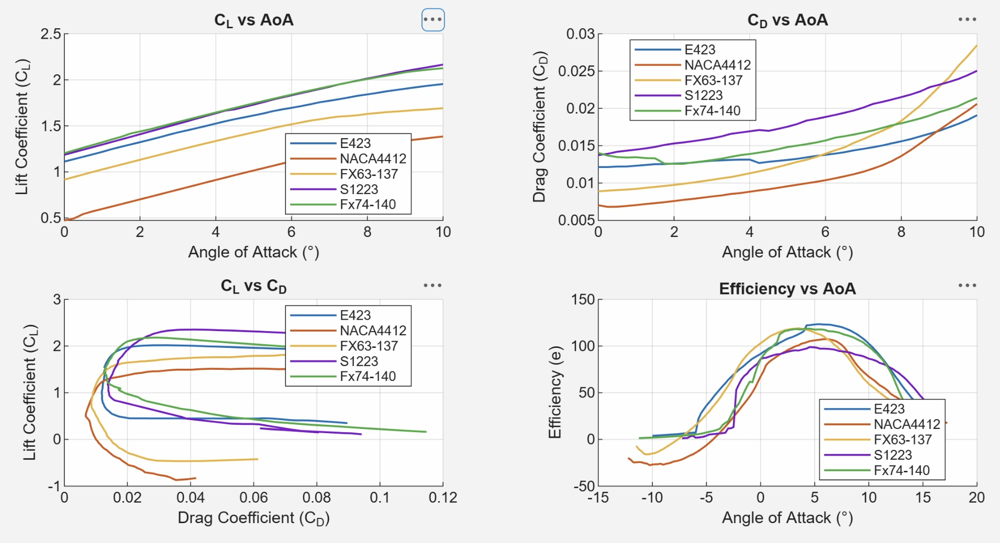
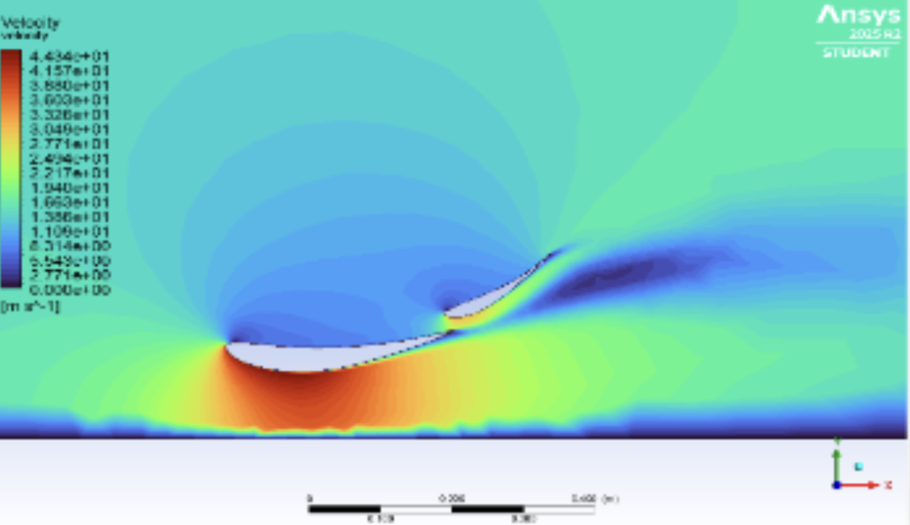
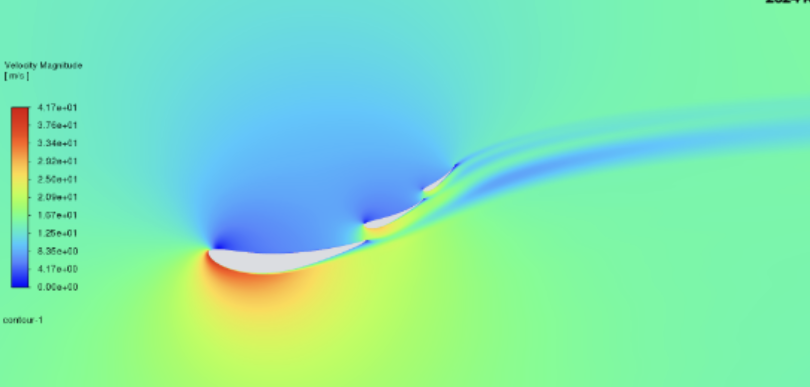
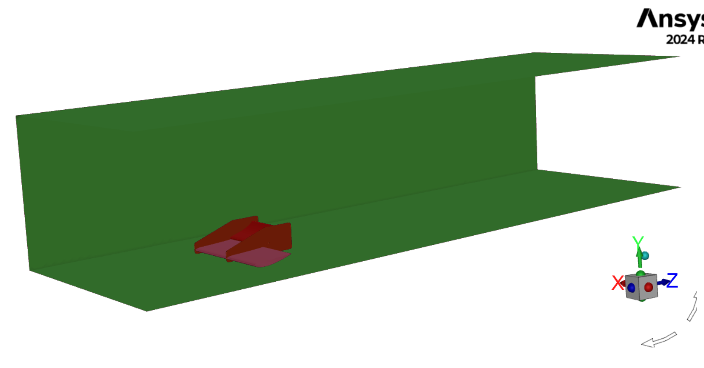
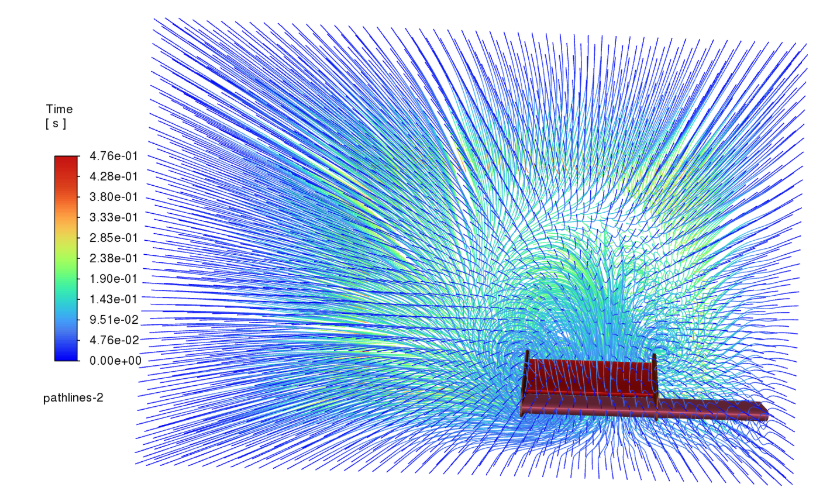
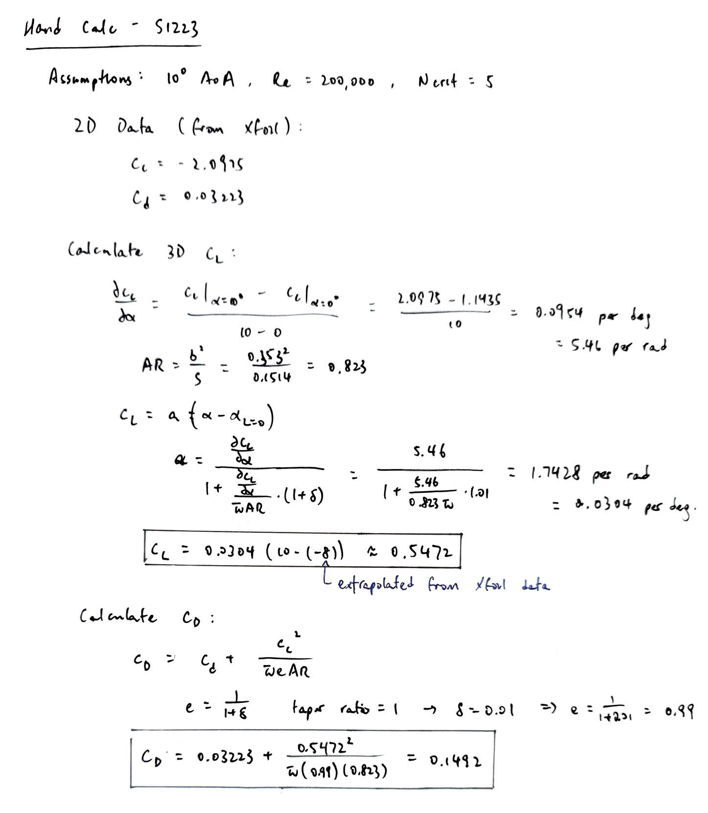
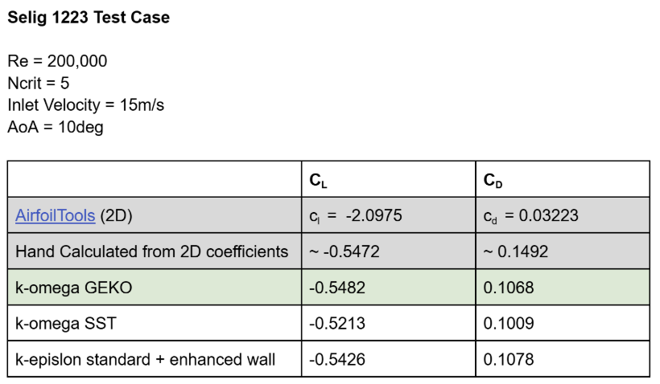
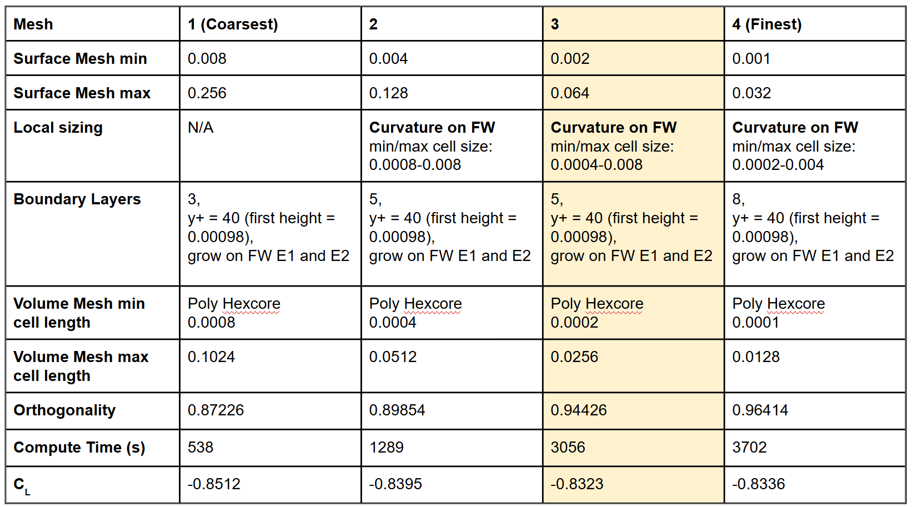

Project / Experience
Front and Rear Wing Design
Skills
- Relevant skill one
- Relevant skill two
- Relevant skill three
- Relevant skill four

Project Description
Triton Racing's switch from an IC engine to an electric powertrain shifted the car's weight distribution rearward, so for TR-26, a clean sheet design of the front and rear wing package was required to keep the car balanced. As the lead aerodynamics engineer, I was responsible for steering the design of the aerodynamic package, ensuring it met the aerodynamic performance targets.
Main Objectives/Design Criteria
- FSAE rules compliant
- Quantitative stiffness goal. (<0.25in deflection)
- Front wing mounts must shear off on impact.
- Aerodynamic effectiveness
- CL of >1.7, CD of <0.3, based on TR-24’s performance data.
- Aero balance to ensure center of pressure lies slightly behind CG.
- Aero package must be lightweight. (<15lbs)
- Simple geometry, design for manufacturability.
- Minimise Cost and materials.
Initial Design Thoughts - Airfoil Selection
I first used Airfoiltools.com and Xfoil for very preliminary research and comparison beteween various high-lift airfoils. As this was our first attempt at building an EV race car, our car would be very power-limited, so more focus was placed on choosing an airfoil with a high lift coefficient.
Compare airfoils using aerodynamic data from Airfoiltools.com and Xfoil

2D CFD
I started with 2D CFD on the chosen airfoils, performing an iterative preliminary study on the 2D front and rear wing geometry to:
- Minimise flow separation, especially at the second and third wing elements.
- Slot gaps allows flow re-energization and pressure recovery.
Working in 2D also let me iterate on the design much faster than running 3D CFD, which is far more computationally expensive.
2D CFD Study - Final iteration of Front & Rear Wing


3D CFD Study
I used 3D CFD to validate the final design and ensure that the aerodynamic performance targets were met at our designed operating speeds of 15m/s. The 3D CFD study allowed me to analyze the flow behavior around the entire wing assembly, including the effects of wingtip vortices and interactions between the front and rear wings and the car chassis as well.


Turbulence Models
Different conditions require different turbulence models. k-epsilon is stable in free-stream flow but needs wall functions near walls, while k-omega SST resolves the viscous sublayer more accurately at the cost of a finer near-wall mesh. Rather than assume k-omega SST was best, I hand-calculated the expected lift and drag coefficients of our 3D wings from airfoiltools.com data and basic aerodynamic equations, then compared them against 3D CFD runs with each turbulence model to pick the most accurate one for our design.


Grid Independence Study
By conducting a grid independence study, I ensured that the results were not influenced by the mesh size. The final mesh was chosen based on a balance between accuracy and computational efficiency.

Outcome
I sucessfully designed a aerodynamic package for TR-26, with a 10% improvement in aerodynamic efficiency